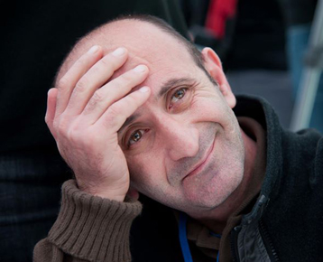

Доклад
Давида Мчедлидзе,
представленный
в рамках
открытого конкурса
на участие
в Текалинском
процессе
по теме "Южнокавказский Союз: за и против".
по теме "Южнокавказский Союз: за и против".
ЮЖНОКАВКАЗСКИЙ СОЮЗ: ЖЕЛАНИЕ И РЕАЛЬНОСТЬ
Краткий исторический экскурс
Идея единого Кавказа, конечно, не нова и, вроде бы, не так уж и бесперспективна, как это выглядит сейчас, в реальностях Кавказа, обеспокоенного пристальным вниманием России.
Народам Кавказа присуща комплиментарность, хотя бы на культурном уровне. И разница в уровнях развития, в действительности, не столь уж велика, чтобы стать проблемой. Процесс глобализации идет своим чередом, приобретая необратимый характер, и если сегодня подобное единство кому-то кажется непредставимым, то завтра мнения могут измениться.
К примеру, кто бы в царской России мог подумать, что в один прекрасный день страны Кавказа создадут конфедерацию? А ведь история помнит о таком факте первой четверти прошлого века.
Вот что сказал во время подписания договора о создании Кавказской конфедерации в далеком 1918 году лидер грузинских соцдеков, а впоследствии – председатель правительства независимой Грузинской республики Ноэ Жорданиа: «Граждане, сегодня вы были свидетелями редкого и при этом историко-драматического акта. В этом зале умерло одно государство, и вот сейчас в этом же зале закладывается основа второго государства. Между этим двумя государствами, одно из которых умерло, а второе - рождается, не могло быть противоречие интересов… Народы Грузии, объединенные под общим знаменем, заключат союз с народами, живущими за пределами нашего государства, и таким путем восстановится государственное единство, и оно восстановит разрушенное на наших глазах государство. Этим государством будет Кавказский конфедеративный союз. Наш путь, наши идеалы направлены на создание такого государства».
Однако объединение это оказалось нежизнеспособным: сначала оно распалось, а потом Россия захватила составлявшие его государства поодиночке.
Сегодняшняя реальность: региональные конфликты
Как известно, распаду Советского Союза предшествовал ряд различных по степени остроты этнических противостояний не только в республиках Закавказья, но и на Северном Кавказе. Трагедия в Сумгаите, трагедия в Карабахе, затем - вооруженные столкновения в Югоосетинском автономном округе, война в Абхазии. Карабахский конфликт существует по сегодняшний день, и перспективы его урегулирования пока не видно.
В одном из последних аналитических исследований Международной кризисной группы, в частности, говорится, что в течение прошлого года (имеется в виду 2013 год) существующее между Азербайджаном и Арменией противостояние ощутимо обострилось. В документе отмечается, что возросший военный потенциал обеих стран может вызвать новый и более трагический конфликт, нежели это было в 1992-94 годах. Авторы заявляют, что в таком случае ни одна из сторон не сможет достичь легкой и быстрой победы. Этот документ прокомментировал один из его соавторов, руководитель Кавказской программы Международной кризисной группы доктор Лоуренс Шитс: «Двусмысленность и непрозрачность операций в сферах закупок оружия и военных расходов и даже в процессе мирных переговоров – все это указывает на повышение риска».
Не менее сложна ситуация в отношении Южной Осетии и Абхазии. Ясно, что Россия завоеванного не уступит, ясно и то, что все, что мы в течение этих лет в отношении друг друга натворили, все нанесенные и полученные раны - не заживут за два-три дня. Подозреваю, что с течением времени мы еще больше друг от друга отдалимся, потому что – хотим мы того или нет – самым крупным игроком на Южном Кавказе является Россия, основой политик которой всегда был и есть испытанный метод - «разделяй и властвуй». Так что, с учетом всего сказанного, в перспективе 10-20 лет Грузия вряд ли сможет восстановиться в своих прежних границах советского времени. Следовательно, прежде чем говорить о Кавказе, нужно задуматься, есть ли у нас силы для урегулирования своих конфликтов, готов ли для этого политический спектр и общества наших стран? Готовы ли мы к тому, чтобы смириться с реальностью, то есть - признать Абхазию, Южную Осетию и Карабах? Для меня ответ однозначен: на этом этапе – нет.
Но даже если допустить, что эти конфликты урегулированы, геополитические игроки региона не допустят создания здесь какого-либо объединения – с общим рынком, общей политикой безопасности и объединенной инфраструктурой.
Если такое случится, в регионе появится еще один сильный субъект с независимой политикой, и я не думаю, что кто-нибудь это одобрит (подразумеваю, прежде всего, Россию и, частично, Турцию).
Российские базы и вопрос безопасности
Важную роль здесь играют российские военные базы, дислоцированные в Армении и на, условно говоря, спорных территориях Грузии. Каким мы видим место этих баз в едином Кавказе? Должны ли они остаться или уйти в случае создания единого кавказского союза? Наверно, должны быть выведены, что мне кажется непредставимым, в первую очередь, ввиду позиции Армении, подписавшей с Российской Федерацией, насколько я знаю, 49-летний контракт, 2011 года Национальное Собрание Армении ратифицировало соответсвующее соглашение.
Помимо этого, Армения – член Организации договора коллективной безопасности (ОДКБ). Я уже ничего не говорю о военных частях, размещенных в Абхазии и Цхинвальском регионе, которые Россия ни за что не выведет. Даже в далекой перспективе.
Еще один мотив против создания единого Кавказа: как известно, Грузия видит перспективу своей безопасности в НАТО, а Армения, как мы уже говорили, - в военном альянсе с Россией и другими странами-членами ОДКБ. Последний был создан в качестве противовеса НАТО, следовательно, нахождение в нем Армении противоречит евроатлантическим устремлениям Грузии.
Экономический аспект
В современном мире ведущими являются экономические мотивации. Достоинство, историческая память и другие факторы иррационального типа постепенно уходят на второй план. И главный «инструмент» для создания реальных основ единства, очевидно, должен быть именно из ряда экономических обоснований, за которыми следуют другие важные компоненты.
Естественно, создание общего рынка Южного Кавказа, открытие экономических границ было бы выгодно всем трем странам региона, но прежде чем создать общий рынок, необходимо начать с экономической интеграции. Каковы предпосылки к этому, и насколько прочные внешнеэкономические и торговые отношения связывают Грузию с остальными двумя странами Южного Кавказа?
В январе-марте 2013 года внешнеторговый оборот Грузии составил 2.244 млн. долларов США. Отсюда доля Армении – 84 млн., а доля Азербайджана – 153 млн., то есть, почти в два раза больше.
Основными торговыми партнерами Грузии являются Турция, страны СНГ и Евросоюз, тогда как 80% внешнеторгового оборота Армении, по неофициальной информации, приходятся на Россию.
Армения намерена войти в Таможенный союз, а Грузия – в Евросоюз. У Таможенного союза свои правила, у Европейского общего рынка – свои. И, что самое главное, - Армения испытывает экономическую блокаду со стороны Азербайджана, которая вряд ли будет снята до урегулирования Карабахского конфликта.
Таким образом, я не вижу возможности тесной политической или экономической интеграции стран региона, и, тем более, бесплодна идея создания южнокавказского союза.
Давид Мчедлидзе
28-02-2014